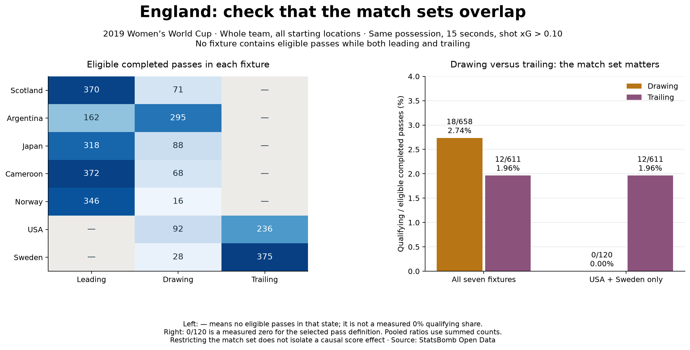

Football analyst training · Project lesson 23
Are we comparing the same matches?
Last lesson, England's pooled qualifying share was 2.74% while drawing and 1.96% while trailing. Now check which fixtures supplied those passes before interpreting that difference.
1. Inspect where both situations have data
England's eligible trailing passes came only from USA and Sweden. Those fixtures also contain drawing passes, so we can compare the two states within each fixture. None of the seven fixtures has eligible passes in both Leading and Trailing. That comparison needs other match evidence.

2. Compare inside each match
- USA: Drawing 0/92 = 0%; Trailing 4/236 = 1.69%.
- Sweden: Drawing 0/28 = 0%; Trailing 8/375 = 2.13%.
The numerator is qualifying passes; the denominator is eligible completed passes in that state and fixture. The same possession, 15-second and shot-xG > 0.10 rules still apply.
3. Understand why the pooled direction changed
Across all seven fixtures, Drawing has the higher share. Within USA and Sweden, Trailing has the higher share. The original Drawing pool included five other fixtures, which supplied all 18 Drawing-state qualifiers. Removing those fixtures changes the question and the comparison.
A dash in the left panel means no eligible passes for that state: the share is undefined. But Drawing 0/120 across USA and Sweden is a measured 0%, because 120 eligible passes were observed. Do not filter out a group merely because its qualifying count is zero.
4. Follow the code in Spyder
Open 23_within_match_score_comparison.py. compare_states finds fixture IDs with eligible passes in both states, keeps that common fixture set, then pools counts before dividing. It also saves each fixture's separate result. The Leading/Trailing common set is empty, so its restricted shares stay None.
5. Write a coach-facing correction
Rewrite: “England passed worse because they were losing.” Include what happened within the two comparable fixtures and one remaining limitation.
Check your interpretation
“Across USA and Sweden, England's qualifying share was 0% while drawing and 1.96% while trailing. Only two fixtures contribute, and game phase, lineup and tactics differ, so this does not show that falling behind improved passing.” The pooled restricted ratio also gives fixtures different weights according to their pass volumes.
Ask your teacher to review your correction or explain the code. Running the prepared analysis and independently defending its conclusion are separate milestones.
Previous: score-state context · Score-state reference · Full report